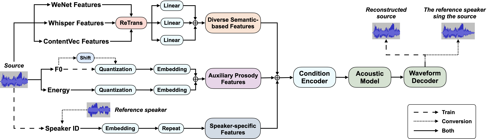

Leveraging Diverse Semantic-based Audio Pretrained Models for Singing Voice Conversion
Overview
Singing Voice Conversion (SVC) is a technique that enables any singer to perform any song. To achieve this, it is essential to obtain speaker-agnostic representations from the source audio, which poses a significant challenge. A common solution involves utilizing a semantic-based audio pretrained model as a feature extractor. However, the degree to which the extracted features can meet the SVC requirements remains an open question. This includes their capability to accurately model melody and lyrics, the speaker-independency of their underlying acoustic information, and their robustness for in-the-wild acoustic environments. In this study, we investigate the knowledge within classical semantic-based pretrained models in much detail. We discover that the knowledge of different models is diverse and can be complementary for SVC. To jointly utilize the diverse pretrained models with mismatched time resolutions, we propose an efficient ReTrans strategy to address the feature fusion problem. Based on the above, we design a Singing Voice Conversion framework based on Diverse Semantic-based Feature Fusion (DSFF-SVC). Experimental results demonstrate that DSFF-SVC can be generalized and improve various existing SVC models, particularly in challenging real-world conversion tasks.

The proposed Singing Voice Conversion framework based on Diverse Semantic-based Features
Fusion (DSFF-SVC).
Contents